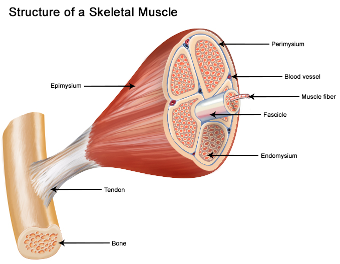
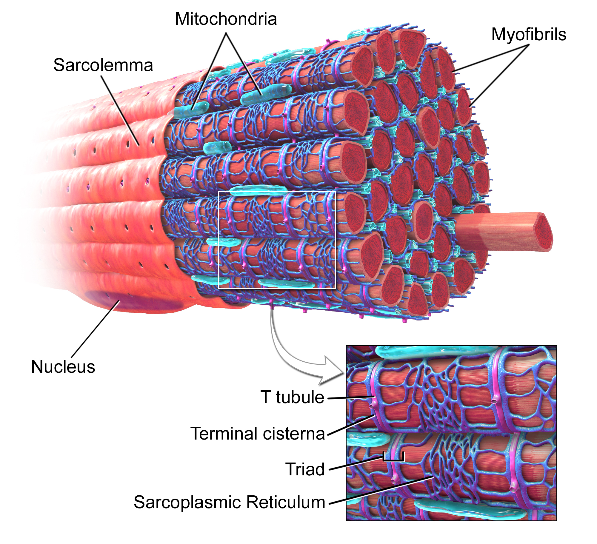
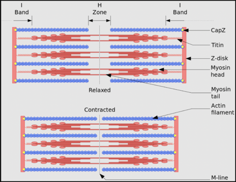

Muscle Structure Hierarchy
Skeletal muscle is organized in layers, from the large muscle organ down to microscopic protein filaments.

Muscle & Fascicles
The entire muscle organ is wrapped in Epimysium. Inside, bundles of muscle cells called Fascicles are separated by Perimysium.
Muscle Fiber (Cell)
Each fascicle contains many Muscle Fibers (cells). These long, multinucleated cells are individually wrapped in Endomysium.

Myofibrils
Within each muscle fiber are numerous Myofibrils, the contractile organelles that run the cell's length.

Sarcomeres & Filaments
Myofibrils consist of repeating Sarcomeres, the basic contractile units. Sarcomeres contain thick Myosin and thin Actin filaments, whose interaction causes contraction.